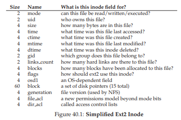
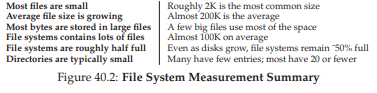
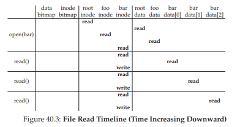

40. Triển khai hệ thống tệp (File System Implementation)
Trong chương này, chúng ta sẽ giới thiệu một triển khai hệ thống tệp đơn giản, được gọi là vsfs (Very Simple File System – hệ thống tệp rất đơn giản).
Hệ thống tệp này là một phiên bản đơn giản hóa của UNIX file system (hệ thống tệp UNIX) và do đó sẽ giúp giới thiệu một số cấu trúc cơ bản trên đĩa (on-disk structures), các phương thức truy cập (access methods) và nhiều chính sách (policies) mà bạn sẽ thấy trong nhiều hệ thống tệp hiện nay.
Hệ thống tệp này hoàn toàn là phần mềm; không giống như quá trình phát triển CPU virtualization (ảo hóa CPU) và memory virtualization (ảo hóa bộ nhớ), chúng ta sẽ không bổ sung các tính năng phần cứng để cải thiện một khía cạnh nào đó của hệ thống tệp (mặc dù chúng ta vẫn cần chú ý đến các đặc tính của thiết bị để đảm bảo hệ thống tệp hoạt động tốt).
Vì có sự linh hoạt rất lớn trong việc xây dựng hệ thống tệp, nên đã có rất nhiều hệ thống tệp khác nhau được tạo ra, từ AFS (Andrew File System) [H+88] cho đến ZFS (Sun’s Zettabyte File System) [B07].
Tất cả các hệ thống tệp này đều có các cấu trúc dữ liệu khác nhau và thực hiện một số việc tốt hơn hoặc kém hơn so với các hệ thống khác.
Do đó, cách chúng ta học về hệ thống tệp sẽ thông qua case study (nghiên cứu tình huống):
- Đầu tiên, một hệ thống tệp đơn giản (vsfs) trong chương này để giới thiệu hầu hết các khái niệm.
- Sau đó là một loạt nghiên cứu về các hệ thống tệp thực tế để hiểu cách chúng khác nhau trong thực tiễn.
THE CRUX: LÀM THẾ NÀO ĐỂ TRIỂN KHAI MỘT HỆ THỐNG TỆP ĐƠN GIẢN
Làm thế nào để xây dựng một hệ thống tệp đơn giản? Cần những cấu trúc nào trên đĩa? Chúng cần theo dõi những gì? Chúng được truy cập như thế nào?
40.1 Cách tư duy (The Way To Think)
Khi suy nghĩ về hệ thống tệp, chúng ta thường đề xuất xem xét hai khía cạnh khác nhau; nếu bạn hiểu cả hai khía cạnh này, bạn có thể hiểu cơ bản cách hệ thống tệp hoạt động.
Khía cạnh thứ nhất là các cấu trúc dữ liệu (data structures) của hệ thống tệp.
Nói cách khác, những loại on-disk structures nào được hệ thống tệp sử dụng để tổ chức dữ liệu (data) và siêu dữ liệu (metadata) của nó?
Các hệ thống tệp đầu tiên mà chúng ta sẽ thấy (bao gồm cả vsfs bên dưới) sử dụng các cấu trúc đơn giản, như mảng các block hoặc các đối tượng khác.
ASIDE: MÔ HÌNH TƯ DUY (MENTAL MODELS) VỀ HỆ THỐNG TỆP
Như chúng ta đã thảo luận trước đây, mental model (mô hình tư duy) là thứ bạn thực sự cần phát triển khi học về các hệ thống.
Đối với hệ thống tệp, mental model của bạn cuối cùng nên bao gồm câu trả lời cho các câu hỏi như:
- Những on-disk structures nào lưu trữ dữ liệu và metadata của hệ thống tệp?
- Điều gì xảy ra khi một process mở một file?
- Những cấu trúc nào trên đĩa được truy cập trong quá trình đọc hoặc ghi?
Bằng cách làm việc và cải thiện mental model của mình, bạn sẽ phát triển một sự hiểu biết trừu tượng về những gì đang diễn ra, thay vì chỉ cố gắng hiểu các chi tiết cụ thể của một đoạn code hệ thống tệp nào đó (mặc dù điều đó cũng hữu ích, tất nhiên!).
Trong khi đó, các hệ thống tệp tinh vi hơn, như SGI’s XFS, sử dụng các cấu trúc dạng cây (tree-based structures) phức tạp hơn [S+96].
Khía cạnh thứ hai của một hệ thống tệp là các phương thức truy cập (access methods).
Hệ thống tệp ánh xạ các call (system call) do một process thực hiện, chẳng hạn như open(), read(), write(), v.v., vào các cấu trúc của nó như thế nào?
Những cấu trúc nào được đọc trong quá trình thực thi một system call cụ thể?
Những cấu trúc nào được ghi?
Tất cả các bước này được thực hiện hiệu quả đến mức nào?
Nếu bạn hiểu các cấu trúc dữ liệu và các phương thức truy cập của một hệ thống tệp, bạn đã phát triển được một mental model tốt về cách nó thực sự hoạt động – đây là một phần quan trọng trong tư duy hệ thống (systems mindset).
Hãy cố gắng xây dựng mental model của bạn khi chúng ta bắt đầu đi sâu vào triển khai đầu tiên này.
40.2 Tổ chức tổng thể (Overall Organization)
Bây giờ chúng ta sẽ xây dựng tổ chức tổng thể trên đĩa (on-disk organization) của các cấu trúc dữ liệu trong hệ thống tệp vsfs.
Điều đầu tiên cần làm là chia đĩa thành các block; các hệ thống tệp đơn giản chỉ sử dụng một kích thước block duy nhất, và đó cũng chính là cách chúng ta sẽ làm ở đây.
Chúng ta chọn kích thước phổ biến là 4 KB.
Như vậy, cách nhìn của chúng ta về phân vùng đĩa nơi xây dựng hệ thống tệp sẽ rất đơn giản: một dãy các block, mỗi block có kích thước 4 KB.
Các block được đánh địa chỉ từ 0 đến N − 1, trong một phân vùng có kích thước N block 4 KB.
Giả sử chúng ta có một đĩa rất nhỏ, chỉ với 64 block:
...
Tiếp theo, hãy nghĩ về những gì cần lưu trữ trong các block này để xây dựng một hệ thống tệp.
Tất nhiên, điều đầu tiên xuất hiện trong đầu là dữ liệu người dùng (user data).
Thực tế, phần lớn dung lượng trong bất kỳ hệ thống tệp nào là (và nên là) dữ liệu người dùng.
Chúng ta sẽ gọi vùng đĩa dùng cho dữ liệu người dùng là data region (vùng dữ liệu), và, để đơn giản, dành một phần cố định của đĩa cho các block này – giả sử 56 block cuối cùng trong tổng số 64 block trên đĩa:
...
Như chúng ta đã tìm hiểu (một chút) ở chương trước, hệ thống tệp phải theo dõi thông tin về mỗi file.
Thông tin này là một phần metadata (siêu dữ liệu) quan trọng, bao gồm:
- Các data block (trong data region) tạo thành file
- Kích thước file
- Chủ sở hữu và quyền truy cập
- Thời gian truy cập và chỉnh sửa
- Và các thông tin tương tự khác
Để lưu trữ thông tin này, hệ thống tệp thường có một cấu trúc gọi là inode (chúng ta sẽ tìm hiểu kỹ hơn về inode ở phần sau).
Để chứa các inode, chúng ta cũng cần dành một phần dung lượng trên đĩa cho chúng.
Chúng ta sẽ gọi phần này là inode table (bảng inode), đơn giản là một mảng các inode lưu trên đĩa.
Như vậy, hình ảnh hệ thống tệp trên đĩa của chúng ta bây giờ sẽ như sau, giả sử chúng ta dùng 5 block trong tổng số 64 block cho inode (được ký hiệu bằng chữ I trong sơ đồ):
...
Cần lưu ý rằng inode thường không lớn, ví dụ 128 hoặc 256 byte.
Giả sử mỗi inode có kích thước 256 byte, một block 4 KB có thể chứa 16 inode, và hệ thống tệp ở trên sẽ có tổng cộng 80 inode.
Trong hệ thống tệp đơn giản của chúng ta, được xây dựng trên một phân vùng nhỏ 64 block, con số này chính là số lượng file tối đa mà hệ thống tệp có thể chứa; tuy nhiên, cũng cần lưu ý rằng cùng một hệ thống tệp này, nếu được xây dựng trên một đĩa lớn hơn, chỉ cần cấp phát một inode table lớn hơn là có thể chứa nhiều file hơn.
Cho đến lúc này, hệ thống tệp của chúng ta đã có data block (D) và inode (I), nhưng vẫn còn thiếu một số thành phần.
Một thành phần quan trọng vẫn cần, như bạn có thể đoán, là cách để theo dõi inode hoặc data block nào đang rảnh (free) hoặc đã được cấp phát (allocated).
Các cấu trúc theo dõi cấp phát (allocation structures) là thành phần bắt buộc trong bất kỳ hệ thống tệp nào.
Có nhiều phương pháp để theo dõi cấp phát.
Ví dụ: chúng ta có thể dùng free list (danh sách các block rảnh) trỏ tới block rảnh đầu tiên, block này lại trỏ tới block rảnh tiếp theo, và cứ thế.
Tuy nhiên, ở đây chúng ta chọn một cấu trúc đơn giản và phổ biến gọi là bitmap – một cho data region (data bitmap) và một cho inode table (inode bitmap).
Bitmap là một cấu trúc đơn giản: mỗi bit được dùng để biểu thị xem đối tượng/block tương ứng là free (0) hay in-use (1).
Và như vậy, bố cục mới trên đĩa của chúng ta sẽ bao gồm inode bitmap (i) và data bitmap (d):
Bạn có thể nhận thấy rằng việc sử dụng toàn bộ một block 4 KB cho các bitmap này có phần hơi “dư thừa”; một bitmap như vậy có thể theo dõi trạng thái cấp phát của 32K đối tượng, trong khi chúng ta chỉ có 80 inode và 56 data block.
Tuy nhiên, để đơn giản, chúng ta vẫn dành nguyên một block 4 KB cho mỗi bitmap.
Người đọc tinh ý (tức là người vẫn còn tỉnh táo) có thể nhận ra rằng còn một block trống trong thiết kế cấu trúc trên đĩa của hệ thống tệp rất đơn giản này.
Chúng ta sẽ dành block này cho superblock, được ký hiệu bằng S trong sơ đồ bên dưới.
Superblock chứa thông tin về hệ thống tệp cụ thể này, bao gồm, ví dụ:
- Số lượng inode và data block trong hệ thống tệp (lần lượt là 80 và 56 trong ví dụ này)
- Vị trí bắt đầu của inode table (block số 3)
- Và các thông tin khác
Superblock cũng thường chứa một magic number nào đó để nhận diện loại hệ thống tệp (trong trường hợp này là vsfs).
...
Do đó, khi mount (gắn kết) một hệ thống tệp, hệ điều hành sẽ đọc superblock trước tiên để khởi tạo các tham số cần thiết, sau đó gắn volume vào cây hệ thống tệp.
Khi các file trong volume được truy cập, hệ thống sẽ biết chính xác cần tìm các cấu trúc trên đĩa ở đâu.
40.3 Tổ chức file: Inode (File Organization: The Inode)
Một trong những cấu trúc trên đĩa quan trọng nhất của hệ thống tệp là inode; hầu như tất cả các hệ thống tệp đều có một cấu trúc tương tự.
Tên gọi inode là viết tắt của index node, tên lịch sử được đặt cho nó trong UNIX [RT74] và có thể cả các hệ thống trước đó, vì ban đầu các node này được sắp xếp trong một mảng, và mảng này được index (đánh chỉ số) để truy cập inode cụ thể.
ASIDE: CẤU TRÚC DỮ LIỆU — INODE
Inode là tên gọi chung được sử dụng trong nhiều hệ thống tệp để mô tả cấu trúc lưu trữ metadata (siêu dữ liệu) của một file, chẳng hạn như:
- Độ dài file
- Quyền truy cập (permissions)
- Vị trí các block dữ liệu cấu thành file
Tên gọi này xuất hiện ít nhất từ thời UNIX (và có thể sớm hơn, như trong hệ thống Multics hoặc các hệ thống trước đó); nó là viết tắt của index node, vì inode number được dùng để truy cập vào mảng inode trên đĩa nhằm tìm inode tương ứng.
Như chúng ta sẽ thấy, thiết kế inode là một phần quan trọng trong thiết kế hệ thống tệp.
Hầu hết các hệ thống hiện đại đều có một cấu trúc tương tự cho mỗi file mà chúng quản lý, nhưng có thể đặt tên khác (như dnodes, fnodes, v.v.).
Mỗi inode được tham chiếu ngầm định bởi một số (gọi là i-number), mà trước đây chúng ta đã gọi là tên mức thấp của file.
Trong vsfs (và các hệ thống tệp đơn giản khác), khi biết i-number, bạn có thể trực tiếp tính toán vị trí inode tương ứng trên đĩa.
Ví dụ: xét inode table của vsfs như trên:
- Kích thước 20 KB (gồm 5 block 4 KB)
- Chứa 80 inode (giả sử mỗi inode có kích thước 256 byte)
- Giả sử vùng inode bắt đầu tại địa chỉ 12 KB (tức là: superblock bắt đầu ở 0 KB, inode bitmap ở địa chỉ 4 KB, data bitmap ở 8 KB, và inode table ngay sau đó)
Trong vsfs, chúng ta có bố cục cho phần đầu của phân vùng hệ thống tệp như sau (xem ở dạng phóng to):
Để đọc inode số 32, hệ thống tệp trước tiên sẽ tính offset (vị trí bù) trong vùng inode:
[ 32 \cdot \text{sizeof(inode)} = 8192 \ \text{byte} ]
Sau đó cộng giá trị này với địa chỉ bắt đầu của inode table trên đĩa (inodeStartAddr = 12KB), và thu được địa chỉ byte chính xác của block inode mong muốn: 20KB.
Nhắc lại rằng đĩa không được đánh địa chỉ theo byte (byte addressable), mà bao gồm một số lượng lớn các sector có thể đánh địa chỉ, thường là 512 byte mỗi sector.
Do đó, để lấy block inode chứa inode số 32, hệ thống tệp sẽ thực hiện thao tác đọc từ sector:
[ (20 \times 1024) / 512 = 40 ]
để lấy block inode mong muốn.
Tổng quát hơn, địa chỉ sector sector của block inode có thể được tính như sau:
blk = (inumber * sizeof(inode_t)) / blockSize;
sector = ((blk * blockSize) + inodeStartAddr) / sectorSize;
Bên trong mỗi inode chứa hầu như toàn bộ thông tin cần thiết về một file:
- Loại file (ví dụ: regular file, directory, v.v.)
- Kích thước file
- Số lượng block đã được cấp phát cho file
- Thông tin bảo vệ (protection information) như: ai là chủ sở hữu file, ai có quyền truy cập
- Thông tin thời gian: thời điểm file được tạo, chỉnh sửa, hoặc truy cập lần cuối
- Thông tin vị trí các data block trên đĩa (ví dụ: các con trỏ tới block dữ liệu)
Chúng ta gọi toàn bộ thông tin này là metadata (siêu dữ liệu); thực tế, bất kỳ thông tin nào bên trong hệ thống tệp mà không phải dữ liệu người dùng thuần túy đều được coi là metadata.
Một ví dụ về inode trong ext2 [P09] được minh họa trong Hình 40.1^[1].
Một trong những quyết định quan trọng nhất trong thiết kế inode là cách nó tham chiếu tới vị trí các data block.
Một cách tiếp cận đơn giản là đặt một hoặc nhiều direct pointer (con trỏ trực tiếp – địa chỉ đĩa) bên trong inode; mỗi con trỏ trỏ tới một block dữ liệu thuộc về file.
Cách tiếp cận này có giới hạn: ví dụ, nếu bạn muốn có một file rất lớn (lớn hơn kích thước block nhân với số lượng direct pointer trong inode), bạn sẽ không thể lưu trữ được.
Chỉ mục nhiều cấp (The Multi-Level Index)
Để hỗ trợ các file lớn hơn, các nhà thiết kế hệ thống tệp đã phải đưa vào inode những cấu trúc khác nhau.
Một ý tưởng phổ biến là sử dụng một con trỏ đặc biệt gọi là indirect pointer (con trỏ gián tiếp).
Thay vì trỏ tới một block chứa dữ liệu người dùng, nó trỏ tới một block chứa nhiều con trỏ khác, mỗi con trỏ lại trỏ tới một block dữ liệu người dùng.
Do đó, một inode có thể có một số lượng cố định các direct pointer (ví dụ: 12), và một indirect pointer.
Nếu file đủ lớn, một indirect block sẽ được cấp phát (từ vùng data block trên đĩa), và vị trí dành cho indirect pointer trong inode sẽ được trỏ tới block này.
Giả sử block 4 KB và địa chỉ đĩa dài 4 byte, thì một indirect block sẽ chứa thêm 1024 con trỏ; khi đó, file có thể lớn tới:
[ (12 + 1024) \times 4\text{KB} = 4144\ \text{KB} ]
TIP: CÂN NHẮC CÁC TIẾP CẬN DỰA TRÊN EXTENT (EXTENT-BASED APPROACHES)
Một cách tiếp cận khác là sử dụng extent thay vì các pointer (con trỏ).
Một extent đơn giản là một disk pointer (con trỏ tới đĩa) cộng với một độ dài (tính theo block); do đó, thay vì cần một con trỏ cho mỗi block của file, bạn chỉ cần một con trỏ và một độ dài để xác định vị trí của file trên đĩa.
Chỉ sử dụng một extent là hạn chế, vì có thể gặp khó khăn khi tìm một vùng trống liên tục trên đĩa khi cấp phát file.
Do đó, các file system dựa trên extent thường cho phép nhiều hơn một extent, từ đó mang lại nhiều tự do hơn cho hệ thống tệp trong quá trình cấp phát file.Khi so sánh hai cách tiếp cận, phương pháp dựa trên con trỏ (pointer-based) linh hoạt hơn nhưng sử dụng nhiều metadata (siêu dữ liệu) trên mỗi file (đặc biệt là với các file lớn).
Phương pháp dựa trên extent kém linh hoạt hơn nhưng gọn hơn; đặc biệt, chúng hoạt động tốt khi có đủ không gian trống trên đĩa và file có thể được bố trí liên tục (điều này vốn là mục tiêu của hầu hết các chính sách cấp phát file).
Không có gì ngạc nhiên, với cách tiếp cận này, bạn có thể muốn hỗ trợ các file lớn hơn nữa.
Để làm điều đó, chỉ cần thêm một con trỏ khác vào inode: double indirect pointer (con trỏ gián tiếp kép).
Con trỏ này trỏ tới một block chứa các con trỏ tới indirect block (block gián tiếp), mỗi block gián tiếp lại chứa các con trỏ tới data block (block dữ liệu).
Một double indirect block do đó cho phép mở rộng file thêm 1024 × 1024 block 4 KB, tức là hỗ trợ các file có kích thước hơn 4 GB.
Bạn có thể muốn nhiều hơn thế, và chúng tôi đoán bạn biết điều này sẽ dẫn tới đâu: triple indirect pointer (con trỏ gián tiếp ba cấp).
Tổng thể, cấu trúc cây mất cân bằng này được gọi là multi-level index (chỉ mục nhiều cấp) để tham chiếu tới các block dữ liệu của file.
Hãy xem xét một ví dụ với 12 direct pointer, cùng với một single indirect block và một double indirect block.
Giả sử kích thước block là 4 KB và con trỏ dài 4 byte, cấu trúc này có thể chứa một file có kích thước hơn 4 GB (tức là ((12 + 1024 + 1024^2) \times 4\ \text{KB})).
Bạn có thể tính được kích thước file tối đa nếu bổ sung thêm một triple indirect block không? (gợi ý: rất lớn)
Nhiều hệ thống tệp sử dụng multi-level index, bao gồm các hệ thống tệp phổ biến như Linux ext2 [P09] và ext3, NetApp’s WAFL, cũng như UNIX file system nguyên bản.
Các hệ thống tệp khác, bao gồm SGI XFS và Linux ext4, sử dụng extent thay vì con trỏ đơn giản; xem phần ASIDE trước đó để biết chi tiết về cách hoạt động của các cơ chế dựa trên extent (chúng tương tự như segment trong phần thảo luận về virtual memory).
Bạn có thể tự hỏi: tại sao lại sử dụng một cây mất cân bằng như vậy? Tại sao không dùng cách khác?
Thực tế, nhiều nhà nghiên cứu đã nghiên cứu về hệ thống tệp và cách chúng được sử dụng, và hầu như luôn tìm thấy một số “sự thật” đúng trong nhiều thập kỷ.
Một phát hiện như vậy là hầu hết các file đều nhỏ.
Thiết kế mất cân bằng này phản ánh thực tế đó; nếu hầu hết file thực sự nhỏ, thì hợp lý khi tối ưu cho trường hợp này.
Do đó, với một số lượng nhỏ direct pointer (12 là con số điển hình), một inode có thể trỏ trực tiếp tới 48 KB dữ liệu, và chỉ cần một (hoặc nhiều hơn) block gián tiếp cho các file lớn hơn.
Xem nghiên cứu gần đây của Agrawal et al. [A+07]; Hình 40.2 tóm tắt các kết quả đó.

Hình 40.2: Tóm tắt đo lường hệ thống tệp (File System Measurement Summary)
Tất nhiên, trong không gian thiết kế inode, còn rất nhiều khả năng khác; suy cho cùng, inode chỉ là một cấu trúc dữ liệu, và bất kỳ cấu trúc dữ liệu nào lưu trữ thông tin liên quan và có thể truy vấn hiệu quả đều là đủ.
Vì phần mềm hệ thống tệp có thể dễ dàng thay đổi, bạn nên sẵn sàng khám phá các thiết kế khác nhau nếu workload hoặc công nghệ thay đổi.
40.4 Tổ chức thư mục (Directory Organization)
Trong vsfs (cũng như trong nhiều file system khác), directory (thư mục) có một tổ chức đơn giản; một thư mục về cơ bản chỉ chứa một danh sách các cặp (entry name, inode number).
Đối với mỗi file hoặc directory trong một thư mục nhất định, sẽ có một chuỗi ký tự (string) và một số nguyên (inode number) được lưu trong các data block của thư mục đó.
Đối với mỗi chuỗi, cũng có thể lưu thêm độ dài (trong trường hợp tên có kích thước thay đổi).
Ví dụ: giả sử một thư mục dir (có inode number là 5) chứa ba file (foo, bar, và foobar_is_a_pretty_longname), với các inode number lần lượt là 12, 13 và 24.
Dữ liệu lưu trên đĩa cho dir có thể trông như sau:
...
Trong ví dụ này, mỗi entry có:
- inode number
- record length (tổng số byte cho tên cộng với bất kỳ khoảng trống còn lại nào)
- string length (độ dài thực tế của tên)
- Và cuối cùng là tên entry
Lưu ý rằng mỗi thư mục có hai entry đặc biệt: . (dot) và .. (dot-dot);
.là thư mục hiện tại (trong ví dụ này làdir)..là thư mục cha (trong trường hợp này là thư mục gốc – root)
Việc xóa một file (ví dụ: gọi unlink()) có thể để lại một khoảng trống ở giữa thư mục, do đó cần có cách để đánh dấu khoảng trống này (ví dụ: bằng một inode number dự trữ như 0).
Việc xóa như vậy là một lý do để sử dụng record length: một entry mới có thể tái sử dụng một entry cũ lớn hơn và do đó có thêm khoảng trống bên trong.
ASIDE: CÁC TIẾP CẬN DỰA TRÊN LIÊN KẾT (LINKED-BASED APPROACHES)
Một cách tiếp cận đơn giản hơn trong thiết kế inode là sử dụng linked list (danh sách liên kết).
Thay vì có nhiều con trỏ bên trong inode, bạn chỉ cần một con trỏ trỏ tới block đầu tiên của file.
Để xử lý các file lớn hơn, thêm một con trỏ khác ở cuối block dữ liệu đó, và cứ thế tiếp tục, nhờ đó bạn có thể hỗ trợ các file lớn.Như bạn có thể đoán, linked file allocation (cấp phát file theo danh sách liên kết) hoạt động kém hiệu quả đối với một số loại workload; hãy nghĩ đến việc đọc block cuối cùng của một file, hoặc chỉ đơn giản là truy cập ngẫu nhiên.
Để cải thiện hiệu năng của linked allocation, một số hệ thống sẽ giữ một bảng thông tin liên kết trong bộ nhớ (in-memory table), thay vì lưu các con trỏ “next” cùng với các block dữ liệu.
Bảng này được đánh chỉ số theo địa chỉ của một data block D; nội dung của một entry trong bảng đơn giản là next pointer của D, tức là địa chỉ của block tiếp theo trong file sau D.
Cũng có thể có giá trị null (biểu thị end-of-file) hoặc một ký hiệu khác để chỉ rằng block đó đang rảnh.
Việc có một bảng các con trỏ “next” như vậy giúp cho cơ chế linked allocation có thể thực hiện truy cập ngẫu nhiên hiệu quả, chỉ đơn giản bằng cách quét bảng (trong bộ nhớ) để tìm block mong muốn, rồi truy cập trực tiếp block đó trên đĩa.Nghe bảng này có quen không? Những gì chúng ta vừa mô tả chính là cấu trúc cơ bản của file allocation table hay FAT file system.
Đúng vậy, hệ thống tệp Windows cổ điển này, trước khi có NTFS [C94], dựa trên một cơ chế cấp phát liên kết đơn giản.
Cũng có những điểm khác biệt so với hệ thống tệp UNIX tiêu chuẩn; ví dụ: không có inode theo đúng nghĩa, mà thay vào đó là các entry trong thư mục lưu metadata về file và tham chiếu trực tiếp tới block đầu tiên của file đó, điều này khiến việc tạo hard link là không thể.
Xem Brouwer [B02] để biết thêm các chi tiết “kém thanh lịch” này.
Bạn có thể tự hỏi: các thư mục được lưu trữ ở đâu?
Thường thì, các file system coi thư mục là một loại file đặc biệt.
Do đó, một thư mục có một inode, nằm đâu đó trong inode table (với trường type của inode được đánh dấu là “directory” thay vì “regular file”).
Thư mục có các data block được trỏ tới bởi inode (và có thể cả indirect block); các data block này nằm trong vùng data block region của hệ thống tệp đơn giản của chúng ta.
Cấu trúc trên đĩa của chúng ta vì thế vẫn không thay đổi.
Cũng cần lưu ý rằng danh sách tuyến tính đơn giản của các entry thư mục không phải là cách duy nhất để lưu trữ thông tin này.
Như đã nói trước đó, bất kỳ cấu trúc dữ liệu nào cũng có thể được sử dụng.
Ví dụ: XFS [S+96] lưu trữ thư mục dưới dạng B-tree, giúp cho các thao tác tạo file (cần đảm bảo tên file chưa được sử dụng trước khi tạo) nhanh hơn so với các hệ thống dùng danh sách tuyến tính phải quét toàn bộ.
ASIDE: QUẢN LÝ VÙNG TRỐNG (FREE SPACE MANAGEMENT)
Có nhiều cách để quản lý vùng trống; bitmap chỉ là một trong số đó.
Một số hệ thống tệp (file system) đời đầu sử dụng free list (danh sách khối trống), trong đó một con trỏ duy nhất trong superblock được dùng để trỏ tới block trống đầu tiên; bên trong block đó lại lưu con trỏ tới block trống tiếp theo, và cứ thế tạo thành một danh sách liên kết qua các block trống của hệ thống. Khi cần cấp phát một block, block ở đầu danh sách sẽ được sử dụng và danh sách được cập nhật tương ứng.Các hệ thống tệp hiện đại sử dụng các cấu trúc dữ liệu tinh vi hơn. Ví dụ, SGI’s XFS [S+96] sử dụng một dạng B-tree để biểu diễn gọn gàng các vùng đĩa còn trống. Giống như bất kỳ cấu trúc dữ liệu nào, luôn tồn tại các đánh đổi giữa thời gian và không gian lưu trữ.
40.5 Quản lý vùng trống (Free Space Management)
Một hệ thống tệp phải theo dõi inode và data block nào đang trống và cái nào đã được sử dụng, để khi cần cấp phát một file hoặc thư mục mới, nó có thể tìm được không gian lưu trữ phù hợp.
Do đó, free space management là thành phần quan trọng đối với mọi hệ thống tệp.
Trong vsfs, chúng ta sử dụng hai bitmap đơn giản cho nhiệm vụ này.
Ví dụ: khi tạo một file, hệ thống tệp sẽ phải cấp phát một inode cho file đó.
Hệ thống tệp sẽ tìm trong bitmap để tìm một inode đang trống, và cấp phát nó cho file; sau đó, hệ thống sẽ đánh dấu inode này là đã sử dụng (bằng giá trị 1) và cuối cùng cập nhật bitmap trên đĩa với thông tin chính xác.
Một quy trình tương tự cũng diễn ra khi cấp phát một data block.
Ngoài ra, còn có một số yếu tố khác cần xem xét khi cấp phát data block cho một file mới.
Ví dụ: một số hệ thống tệp Linux như ext2 và ext3 sẽ tìm một dãy các block trống (ví dụ: 8 block) khi tạo một file mới và cần cấp phát data block; bằng cách tìm một dãy block trống như vậy và cấp phát chúng cho file mới, hệ thống tệp đảm bảo rằng một phần của file sẽ được lưu liên tiếp trên đĩa, từ đó cải thiện hiệu năng.
Chính sách pre-allocation (cấp phát trước) như vậy là một heuristic (kinh nghiệm thực tiễn) thường được sử dụng khi cấp phát không gian cho data block.
40.6 Đường truy cập: Đọc và ghi (Access Paths: Reading and Writing)
Giờ đây, khi chúng ta đã có cái nhìn tổng quan về cách file và thư mục được lưu trữ trên đĩa, chúng ta có thể theo dõi luồng hoạt động trong quá trình đọc hoặc ghi một file.
Hiểu được điều gì xảy ra trên đường truy cập (access path) này là yếu tố then chốt thứ hai để nắm bắt cách một hệ thống tệp hoạt động; hãy chú ý!
Trong các ví dụ sau, giả sử rằng hệ thống tệp đã được mount (gắn kết) và do đó superblock đã nằm trong bộ nhớ.
Mọi thứ khác (ví dụ: inode, thư mục) vẫn nằm trên đĩa.

Hình 40.3: Dòng thời gian đọc file (File Read Timeline – thời gian tăng dần từ trên xuống)
Đọc một tệp từ đĩa (Reading A File From Disk)
Trong ví dụ đơn giản này, giả sử bạn muốn mở một tệp (ví dụ: /foo/bar), đọc nội dung của nó, rồi đóng lại.
Để đơn giản, giả sử tệp này chỉ có kích thước 12KB (tức là gồm 3 block).
Khi bạn gọi:
open("/foo/bar", ORDONLY)
File system (hệ thống tệp) trước tiên cần tìm inode của tệp bar để lấy một số thông tin cơ bản về tệp (thông tin quyền truy cập – permissions, kích thước tệp, v.v.).
Để làm được điều này, hệ thống tệp phải tìm được inode, nhưng lúc này nó chỉ có đường dẫn đầy đủ (full pathname).
Hệ thống tệp phải duyệt qua đường dẫn (traverse the pathname) để tìm ra inode mong muốn.
Mọi quá trình duyệt đều bắt đầu từ root của hệ thống tệp, tức root directory (thư mục gốc) được ký hiệu đơn giản là /.
Vì vậy, điều đầu tiên mà FS (file system) sẽ đọc từ đĩa là inode của thư mục gốc.
Nhưng inode này nằm ở đâu?
Để tìm một inode, chúng ta phải biết i-number (số inode).
Thông thường, i-number của một tệp hoặc thư mục được tìm thấy trong thư mục cha của nó; tuy nhiên, root không có thư mục cha (theo định nghĩa).
Do đó, i-number của root phải là một giá trị “được biết trước” (well known); FS phải biết giá trị này khi hệ thống tệp được mount.
Trong hầu hết các hệ thống tệp UNIX, i-number của root là 2.
Vì vậy, để bắt đầu quá trình, FS sẽ đọc block chứa inode số 2 (block inode đầu tiên).
Khi inode đã được đọc vào bộ nhớ, FS có thể xem bên trong inode để tìm các con trỏ (pointer) tới các data block chứa nội dung của thư mục gốc.
FS sẽ sử dụng các con trỏ trên đĩa này để đọc qua thư mục, trong trường hợp này là tìm một entry cho foo.
Bằng cách đọc một hoặc nhiều directory data block, FS sẽ tìm thấy entry cho foo; khi tìm thấy, FS cũng sẽ biết được i-number của foo (giả sử là 44) – thông tin cần thiết cho bước tiếp theo.
Bước tiếp theo là duyệt đệ quy (recursively traverse) đường dẫn cho đến khi tìm được inode mong muốn.
Trong ví dụ này, FS sẽ đọc block chứa inode của foo, sau đó đọc dữ liệu thư mục của nó, và cuối cùng tìm ra i-number của bar.
ASIDE: ĐỌC KHÔNG TRUY CẬP CÁC CẤU TRÚC CẤP PHÁT (READS DON’T ACCESS ALLOCATION STRUCTURES) Nhiều sinh viên thường nhầm lẫn về các cấu trúc cấp phát như bitmap. Cụ thể, nhiều người nghĩ rằng khi bạn chỉ đọc một file và không cấp phát block mới, thì bitmap vẫn sẽ được tham chiếu. Điều này là không đúng! Các cấu trúc cấp phát như bitmap chỉ được truy cập khi cần cấp phát. Inode, directory và indirect block đã có đầy đủ thông tin cần thiết để hoàn thành một yêu cầu đọc; không cần phải kiểm tra một block đã được cấp phát hay chưa khi inode đã trỏ đến nó.
Bước cuối cùng của open() là đọc inode của bar vào bộ nhớ; sau đó FS (file system) thực hiện kiểm tra quyền truy cập (permissions) lần cuối, cấp phát một file descriptor cho tiến trình này trong bảng file mở theo tiến trình (per-process open-file table), và trả về descriptor đó cho người dùng.
Khi đã mở, chương trình có thể gọi system call read() để đọc từ file. Lần đọc đầu tiên (tại offset 0 trừ khi đã gọi lseek()) sẽ đọc block đầu tiên của file, tham chiếu inode để tìm vị trí của block đó; FS cũng có thể cập nhật inode với thời điểm truy cập lần cuối (last-accessed time) mới. Lời gọi read này cũng cập nhật bảng file mở trong bộ nhớ (in-memory open file table) cho file descriptor này, cập nhật file offset để lần đọc tiếp theo sẽ đọc block thứ hai của file, v.v.
Tới một thời điểm nào đó, file sẽ được đóng (close). Công việc ở đây ít hơn nhiều; rõ ràng file descriptor cần được giải phóng (deallocate), nhưng tạm thời đó là tất cả những gì FS cần làm. Không có I/O đĩa nào diễn ra.
Toàn bộ quá trình này được minh họa trong Hình 40.3 (trang 11); thời gian tăng dần từ trên xuống trong hình. Trong hình, call open dẫn đến nhiều lần đọc để cuối cùng tìm ra inode của file. Sau đó, mỗi lần đọc block yêu cầu file system trước hết tham chiếu inode, rồi đọc block, và sau đó cập nhật trường thời gian truy cập lần cuối (last-accessed-time) của inode bằng một lần ghi (write). Hãy dành thời gian để hiểu kỹ điều gì đang diễn ra.
Cũng lưu ý rằng lượng I/O phát sinh bởi open tỉ lệ với độ dài của pathname (đường dẫn). Với mỗi thư mục bổ sung trong đường dẫn, chúng ta phải đọc inode của nó cũng như dữ liệu của nó. Tệ hơn nữa là sự hiện diện của các thư mục lớn; ở đây, chúng ta chỉ phải đọc một block để lấy nội dung của một thư mục, trong khi với một thư mục lớn, chúng ta có thể phải đọc nhiều data block để tìm được entry mong muốn. Đúng vậy, việc đọc một file có thể khá “đau đớn”; và như bạn sắp thấy, việc ghi một file (đặc biệt là tạo mới) thậm chí còn tệ hơn.
Ghi một tệp xuống đĩa (Writing A File To Disk)
Quy trình ghi vào một tệp tương tự như đọc.
Trước tiên, tệp phải được mở (giống như ở phần trên).
Sau đó, ứng dụng có thể gọi write() để cập nhật tệp với nội dung mới.
Cuối cùng, tệp sẽ được đóng.
Không giống như đọc, việc ghi vào tệp có thể yêu cầu cấp phát một block mới (trừ khi block hiện tại chỉ bị ghi đè, chẳng hạn).
Khi ghi một tệp mới, mỗi thao tác ghi không chỉ phải ghi dữ liệu xuống đĩa mà trước đó còn phải quyết định block nào sẽ được cấp phát cho tệp, và do đó phải cập nhật các cấu trúc khác trên đĩa tương ứng (ví dụ: data bitmap và inode).
Vì vậy, mỗi thao tác ghi vào một tệp về mặt logic sẽ tạo ra 5 thao tác I/O:
- Đọc data bitmap (sau đó được cập nhật để đánh dấu block mới cấp phát là đã sử dụng)
- Ghi data bitmap (để phản ánh trạng thái mới xuống đĩa)
- Đọc inode (để lấy thông tin hiện tại)
- Ghi inode (đã được cập nhật với vị trí block mới)
- Ghi block dữ liệu thực tế

Hình 40.4: Dòng thời gian tạo tệp (File Creation Timeline – thời gian tăng dần từ trên xuống)
Lượng ghi còn tệ hơn nữa khi xét đến một thao tác đơn giản và phổ biến như tạo tệp.
Để tạo một tệp, hệ thống tệp không chỉ phải cấp phát một inode, mà còn phải cấp phát không gian trong thư mục chứa tệp mới đó.
Tổng lượng I/O cần thiết để làm điều này là khá lớn:
- 1 lần đọc inode bitmap (để tìm một inode trống)
- 1 lần ghi inode bitmap (để đánh dấu inode đã được cấp phát)
- 1 lần ghi inode mới (để khởi tạo nó)
- 1 lần ghi dữ liệu thư mục (để liên kết tên mức cao của tệp với inode number của nó)
- 1 lần đọc và 1 lần ghi inode của thư mục (để cập nhật nó)
Nếu thư mục cần mở rộng để chứa entry mới, sẽ cần thêm các thao tác I/O bổ sung (ví dụ: tới data bitmap và block thư mục mới).
Tất cả những điều đó chỉ để tạo một tệp!
Hãy xem một ví dụ cụ thể, khi tệp /foo/bar được tạo và ba block được ghi vào nó.
Hình 40.4 (trang 13) cho thấy điều gì xảy ra trong quá trình open() (tạo tệp) và trong mỗi lần ghi 4KB.
Trong hình, các thao tác đọc và ghi xuống đĩa được nhóm theo system call nào đã gây ra chúng, và thứ tự thực hiện xấp xỉ được sắp xếp từ trên xuống dưới.
Bạn có thể thấy khối lượng công việc để tạo tệp: 10 thao tác I/O trong trường hợp này, để duyệt qua pathname và cuối cùng tạo tệp.
Bạn cũng có thể thấy rằng mỗi thao tác ghi có cấp phát tốn 5 thao tác I/O:
- Một cặp để đọc và cập nhật inode
- Một cặp để đọc và cập nhật data bitmap
- Và cuối cùng là ghi dữ liệu thực tế
Làm thế nào để một hệ thống tệp có thể thực hiện tất cả những điều này một cách hiệu quả?
THE CRUX: LÀM THẾ NÀO ĐỂ GIẢM CHI PHÍ I/O CỦA HỆ THỐNG TỆP
Ngay cả những thao tác đơn giản nhất như mở, đọc hoặc ghi một tệp cũng tạo ra một số lượng lớn các thao tác I/O, rải rác khắp đĩa.
Hệ thống tệp có thể làm gì để giảm chi phí cao khi phải thực hiện quá nhiều I/O như vậy?
40.7 Caching và Buffering
Như các ví dụ ở trên cho thấy, việc đọc và ghi file có thể rất tốn kém, gây ra nhiều thao tác I/O tới đĩa (vốn chậm).
Để khắc phục vấn đề hiệu năng nghiêm trọng này, hầu hết các file system (hệ thống tệp) đều tận dụng mạnh mẽ bộ nhớ hệ thống (DRAM) để cache (lưu đệm) các block quan trọng.
Hãy hình dung ví dụ mở file ở trên: nếu không có caching, mỗi lần mở file sẽ yêu cầu ít nhất hai lần đọc cho mỗi cấp trong cây thư mục (directory hierarchy) — một lần để đọc inode của thư mục cần thiết, và ít nhất một lần để đọc dữ liệu của nó.
Với một pathname dài (ví dụ: /1/2/3/.../100/file.txt), hệ thống tệp sẽ phải thực hiện hàng trăm lần đọc chỉ để mở file!
Các hệ thống tệp đời đầu đã giới thiệu một cache kích thước cố định để lưu các block được truy cập thường xuyên.
Tương tự như trong phần thảo luận về virtual memory (bộ nhớ ảo), các chiến lược như LRU (Least Recently Used) và các biến thể khác sẽ quyết định block nào được giữ lại trong cache.
Cache kích thước cố định này thường được cấp phát ngay khi khởi động (boot time) với dung lượng khoảng 10% tổng bộ nhớ.
Tuy nhiên, việc phân vùng bộ nhớ tĩnh như vậy có thể gây lãng phí;
Điều gì sẽ xảy ra nếu tại một thời điểm nào đó, hệ thống tệp không cần tới 10% bộ nhớ?
Với cách tiếp cận kích thước cố định như trên, các trang (page) không được sử dụng trong file cache sẽ không thể được tái sử dụng cho mục đích khác, và do đó bị lãng phí.
Ngược lại, các hệ thống hiện đại áp dụng cách phân vùng động.
Cụ thể, nhiều hệ điều hành hiện đại tích hợp virtual memory pages và file system pages vào một unified page cache (bộ nhớ đệm trang hợp nhất) [S00].
Bằng cách này, bộ nhớ có thể được phân bổ linh hoạt hơn giữa virtual memory và file system, tùy thuộc vào bên nào cần nhiều bộ nhớ hơn tại một thời điểm nhất định.
Hãy hình dung lại ví dụ mở file nhưng có caching:
Lần mở đầu tiên có thể tạo ra nhiều lưu lượng I/O để đọc inode và dữ liệu thư mục, nhưng các lần mở file tiếp theo của cùng file đó (hoặc các file trong cùng thư mục) sẽ hầu hết trúng cache (cache hit), và do đó không cần I/O nào nữa.
TIP: HIỂU RÕ SỰ KHÁC NHAU GIỮA PHÂN VÙNG TĨNH VÀ PHÂN VÙNG ĐỘNG (STATIC VS. DYNAMIC PARTITIONING)
Khi phân chia một tài nguyên cho nhiều client/người dùng khác nhau, bạn có thể sử dụng phân vùng tĩnh (static partitioning) hoặc phân vùng động (dynamic partitioning).
- Phân vùng tĩnh: đơn giản là chia tài nguyên thành các phần cố định ngay từ đầu; ví dụ, nếu có hai người dùng bộ nhớ, bạn có thể cấp một tỷ lệ cố định bộ nhớ cho một người, và phần còn lại cho người kia.
- Phân vùng động: linh hoạt hơn, phân bổ lượng tài nguyên khác nhau theo thời gian; ví dụ, một người dùng có thể được cấp tỷ lệ băng thông đĩa cao hơn trong một khoảng thời gian, nhưng sau đó hệ thống có thể chuyển và cấp cho người dùng khác một phần lớn hơn của băng thông đĩa khả dụng.
Mỗi cách tiếp cận đều có ưu điểm riêng:
- Phân vùng tĩnh đảm bảo mỗi người dùng nhận được một phần tài nguyên, thường mang lại hiệu năng dự đoán được hơn và dễ triển khai hơn.
- Phân vùng động có thể đạt hiệu suất sử dụng tốt hơn (bằng cách cho phép người dùng “đói” tài nguyên tiêu thụ phần tài nguyên đang nhàn rỗi), nhưng có thể phức tạp hơn để triển khai, và có thể dẫn đến hiệu năng kém hơn cho những người dùng mà tài nguyên nhàn rỗi của họ bị người khác sử dụng và mất nhiều thời gian để thu hồi lại khi cần.
Như thường lệ, không có phương pháp nào là “tốt nhất” tuyệt đối; thay vào đó, bạn nên xem xét vấn đề cụ thể và quyết định cách tiếp cận phù hợp nhất. Thực tế, chẳng phải bạn luôn nên làm như vậy sao?
Chúng ta cũng cần xem xét tác động của caching đối với ghi (write).
Trong khi read I/O có thể được loại bỏ hoàn toàn nếu cache đủ lớn, thì lưu lượng ghi vẫn phải được gửi xuống đĩa để trở thành dữ liệu bền vững (persistent).
Do đó, cache không đóng vai trò như một bộ lọc hiệu quả cho ghi như nó làm đối với đọc.
Tuy nhiên, write buffering (đệm ghi – đôi khi được gọi như vậy) chắc chắn mang lại nhiều lợi ích về hiệu năng:
- Trì hoãn ghi cho phép hệ thống tệp gom nhiều cập nhật thành một tập nhỏ các thao tác I/O; ví dụ, nếu inode bitmap được cập nhật khi một file được tạo và sau đó lại được cập nhật ngay sau đó khi một file khác được tạo, hệ thống tệp sẽ tiết kiệm được một thao tác I/O bằng cách trì hoãn việc ghi sau lần cập nhật đầu tiên.
- Đệm nhiều thao tác ghi trong bộ nhớ cho phép hệ thống lập lịch (schedule) các thao tác I/O tiếp theo một cách tối ưu hơn, từ đó cải thiện hiệu năng.
- Tránh một số thao tác ghi hoàn toàn nhờ trì hoãn chúng; ví dụ, nếu một ứng dụng tạo một file rồi xóa nó ngay sau đó, việc trì hoãn ghi thông tin tạo file xuống đĩa sẽ giúp bỏ qua hoàn toàn các thao tác ghi này. Trong trường hợp này, “lười biếng” (trong việc ghi block xuống đĩa) lại là một ưu điểm.
Vì những lý do trên, hầu hết các hệ thống tệp hiện đại đệm ghi trong bộ nhớ từ 5 đến 30 giây, điều này tạo ra một sự đánh đổi khác:
- Nếu hệ thống bị crash trước khi các cập nhật được ghi xuống đĩa, các cập nhật này sẽ bị mất.
- Tuy nhiên, bằng cách giữ dữ liệu ghi trong bộ nhớ lâu hơn, hiệu năng có thể được cải thiện nhờ gom nhóm (batching), lập lịch (scheduling), và thậm chí tránh được một số thao tác ghi.
TIP: HIỂU RÕ SỰ ĐÁNH ĐỔI GIỮA TÍNH BỀN VỮNG VÀ HIỆU NĂNG (DURABILITY/PERFORMANCE TRADE-OFF)
Các storage system (hệ thống lưu trữ) thường đưa ra cho người dùng một sự đánh đổi giữa tính bền vững (durability) và hiệu năng (performance).
- Nếu người dùng muốn dữ liệu vừa ghi phải ngay lập tức bền vững (tức được lưu vĩnh viễn), hệ thống phải thực hiện đầy đủ quá trình commit dữ liệu mới xuống đĩa, và do đó thao tác ghi sẽ chậm (nhưng an toàn).
- Ngược lại, nếu người dùng có thể chấp nhận mất một lượng nhỏ dữ liệu, hệ thống có thể buffer (đệm) các thao tác ghi trong bộ nhớ một thời gian rồi mới ghi xuống đĩa (ở chế độ nền – background).
Cách làm này khiến thao tác ghi có vẻ hoàn tất nhanh chóng, cải thiện hiệu năng cảm nhận (perceived performance); tuy nhiên, nếu xảy ra crash (sập hệ thống), các thao tác ghi chưa được commit xuống đĩa sẽ bị mất — và đó chính là sự đánh đổi.
Để hiểu cách đưa ra quyết định đánh đổi hợp lý, tốt nhất là phải hiểu yêu cầu của ứng dụng đang sử dụng hệ thống lưu trữ. Ví dụ: việc mất vài hình ảnh cuối cùng được tải xuống bởi trình duyệt web có thể chấp nhận được, nhưng mất một phần của giao dịch cơ sở dữ liệu đang cộng tiền vào tài khoản ngân hàng của bạn thì khó chấp nhận hơn. Trừ khi bạn rất giàu, tất nhiên; khi đó, có lẽ bạn chẳng bận tâm đến việc giữ từng xu cuối cùng.
Một số ứng dụng (như database) không chấp nhận sự đánh đổi này.
Do đó, để tránh mất dữ liệu ngoài ý muốn do write buffering, chúng đơn giản ép hệ thống ghi dữ liệu xuống đĩa, bằng cách gọi fsync(), sử dụng các giao diện direct I/O để bỏ qua cache, hoặc sử dụng giao diện raw disk và bỏ qua hoàn toàn file system².
Trong khi hầu hết các ứng dụng chấp nhận sự đánh đổi mà file system đưa ra, vẫn có đủ các cơ chế kiểm soát để buộc hệ thống thực hiện theo ý bạn nếu mặc định không đáp ứng được.
40.8 Tóm tắt (Summary)
Chúng ta đã tìm hiểu các thành phần cơ bản cần có để xây dựng một file system.
Cần có thông tin về mỗi file (metadata – siêu dữ liệu), thường được lưu trong một cấu trúc gọi là inode.
Directory (thư mục) chỉ là một loại file đặc biệt lưu ánh xạ tên → inode number.
Ngoài ra, còn cần các cấu trúc khác; ví dụ, file system thường sử dụng một cấu trúc như bitmap để theo dõi inode hoặc data block nào đang trống hoặc đã được cấp phát.
Điểm tuyệt vời của thiết kế file system là tính tự do; các file system mà chúng ta sẽ khám phá trong những chương tiếp theo đều tận dụng sự tự do này để tối ưu một khía cạnh nào đó của hệ thống tệp.
Rõ ràng vẫn còn nhiều chính sách (policy) mà chúng ta chưa đề cập.
Ví dụ: khi tạo một file mới, nó nên được đặt ở đâu trên đĩa?
Chính sách này và các chính sách khác sẽ là chủ đề của những chương sau.
Hay là… sẽ không?³